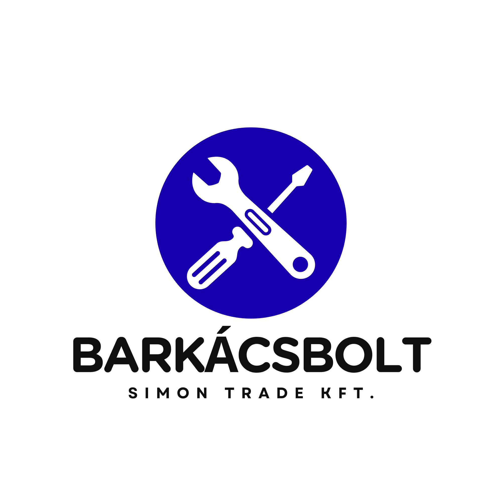

Miket találsz nálunk?
Csavarok
Faipari csavarok
- Pozdorja csavarok / faforgácslap csavarok
- Gipszkarton csavarok fához
- Gipszkarton csavarok fémhez
- Önfúró gipszkarton csavarok
- Faszerkezetépítő csavarok
- Állványcsavarok
- Állítócsavarok
- Konfirmátor csavarok
- Mosdócsavarok / fa-fém menetű csavarok
- Állványrögzítő szemes csavarok
- Szelemen csavarok
- Hintahorgok
- Lámpahorgok
- Kis szemescsavarok
- Falhorgok
Lemezcsavarok
- Hatlapfejű önfúró lemezcsavarok
- Süllyesztett fejű önfúró lemezcsavarok
- Opel csavarok
- Süllyesztett fejű lemezcsavarok
- D fejű lemezcsavarok
Metrikus csavarok
- Hatlapfejű csavarok
- Kapupánt csavarok
- Kis metrikus csavarok
- D fejű metrikus csavarok
- Süllyesztett fejű metrikus csavarok
- Bútorfogantyú csavarok
- BKNY csavarok
Egyéb csavarok, rögzítők
- Tokrögzítő csavarok
- Betoncsavarok
- Alapcsavarok
- Födémékek
- Fémdübelek
- Menetes szálak
Anyák
Anyák
- Peremes anyák
- Körmös anyák
- Zárt anyák
- Önzáró anyák
- Toldó anyák
- Szárnyas anyák
- Gyűrűs anyák
Alátétek
Alátétek
- Lapos alátétek
- Rugós alátétek
- Fakötésű alátét
- Körmös alátétek
- EPDM alátétek
- Kúpos alátétek
Szegek, szegecsek
Szegek, szegecsek
- Huzalszegek
- Palaszegek
- Zsindelyszegek
- Bognárszegek
- Kartácsszegek
- Popszegecsek
- Sasszegek
- Csavart szegek
- Kárpitos szegek
- Kátránypapír szeg
- Rajzszeg
Tiplik
Tiplik
- Univerzális tiplik
- Gipszkarton tiplik
- Szárnyas tiplik
- Beüthető fém gipszkarton tiplik
- Csavarmenetű gipszkarton tiplik
- Molly dübelek
- Ytong tiplik
- Hungarocell tiplik
- Beütős tiplik
- Szigetelés rögzítők
Kötéstechnika
Kötelek és kiegészítők
- Kötelek
- Zsinegek / madzagok
- Hevederek
- Gumipókok
- Huzalfeszítők
- Láncok
- Lánctoldók
- Drótkötelek / sodronykötelek
- Karabínerek
- Kötélszívek
- Kötélszorítók
- Seklik
- S kampók
- Kötélcsigák
- Hilti szalagok
- Ácskapocs
- Csőbilincsek
- Szorítóbilincsek
Faösszekötők, perforált lemezek
Faösszekötők
- Sarokvasak
- Perforált lemezek
- Oszloptartók
- Szarufa rögzítők
- Polctartó konzolok
Bútorkellékek
Bútorkellékek
- Zsanérok
- Kivetőpántok
- Bútorpántok
- Fotelgörgők
- Csúszófilcek
- Bútorlábak
- Fatiplik
- Lamelló kekszek
- Fióksínek
- Szegletvasak
- Fogantyúk, bútorgombok
- Függesztő vasalatok
Épületvasalatok
Épületvasalatok
- Ajtó- és ablakpántok
- Hegeszthető pántok
- Lakatpántok
- Tolózárak
- Kapupántok
Épületveretek
Épületveretek
- Kilincsek ajtóhoz
- Kilincsek ablakhoz
- Zárcímek
- Zárólemezek
- Kilincsgarnitúrák
- Rozetták
Zárak, zárbetétek
Zárak
- Bevésőzárak
- Részegezőszárak
- Portálzárak
- Felsőzárak
- Tolókapuzárak
- Elektromos zárak
- Bútorzárak
- Zárbetétek
- Lakatok
Kapuvasalatok
Kapuvasalatok
- Tolókapukerekek
- Vezetőgörgők
- Forgáspontok
- Zártszelvénydugók
Otthoni kiegészítők
Otthoni kiegészítők
- Függönycsipeszek
- Redőny tartozékok
- Ajtókitámasztók
- Postaládák
- Vezeték nélküli csengők
- Házszámok
- Ajtó- és ablaktömítések
- Karnisok
- Vitrázsrudak
- Kép- és tükörakasztók
- Lábtörlők
Háztartási eszközök
Háztartási eszközök
- Partvisok
- Seprűk
- Lapátok
- Felmosófejek
- Felmosó vödrök
- Partvisnyelek
- Ruhaszárító csipesz
- Pókhálózók
- Szemetes zsákok
- Háztartási kesztyűk, gumi és eldobható
- WC kefék
- WC pumpák
- Súrolókefék
- Szúnyoghálók
Konyhai kiegészítők
Konyhai kiegészítők
- Zuhanytartozékok
- Lefolyószűrők
- Lefolyódugók
- Porzsákok otthoni porszívókhoz
- Porzsákok ipari porszívókhoz
Kerti eszközök
Kerti eszközök
- Locsolótömlők
- Slagtartozékok
- Kötöződrótok
- Növénykarók
- Fűnyíró damilok
Kerti szerszámok
- Ásók
- Kapák
- Lapátok
- Fűrészek
- Metszőollók
- Lombseprűk
- Gereblyék
- Ágvágók
- Sövényvágók
- Locsolókannák
- Fém vödrök
Létrák
Létrák
- Alumínium létrák / háztartási létrák
- Fa festő létrák
Kulcsmásolás
Kulcsmásolás és kiegészítők
- Cilinderes kulcsok másolása
- Fúrt kulcsok másolása
- Bútor- és szekrénykulcsok / számozott kulcsok
- Kulcstartók
- Biléták
- Kulcskarikák
- Proxi másolás
Fa áru
Fa áru
- Barkácslécek
- Szerszámnyelek
- Fa ékek
Kézi szerszámok
Fogók
- Oldalcsípő fogók
- Kombinált fogók
- Vízpumpa fogók
- Popszegecsfogók
- Harapófogók
- Csőfogók
Csavarhúzók
- Csavarhúzók
- Behajtóhegyek
- Bittartók
- Csavarhúzó készletek
Kalapácsok
- Gumi kalapácsok
- Lécező kalapácsok
- Ácskalapácsok
- Lakatos kalapácsok
- Fa kalapácsok
Festőszerszámok és kiegészítők
- Teddy hengerek
- Ecsetek
- Festékkaparók
- Takarófóliák
- Festő szalagok / Tesa szalagok
- Csiszolópapírok
Csempéző szerszámok és kiegészítők
- Szivacsos simítók
- Fúgázó kanalak
- Hézagoló ékek
- Csempekeresztek
Építőipari szerszámok
- Vízmértékek
- Öleslécek
- Kartecsnik
- Ácsceruzák
- Jelölőfilcek
- Feszítővasak
- Kőműves szerszámok
- Kézi vésőszárak
- Kőműves kanalak
- Kőműves serpenyők
- Kőműves zsinórok
- Glettvasak
- Kőműves kalapácsok
Asztalos szerszámok
- Kézi szorítók
- Reszelők
- Ráspolyok
- Fa vésők
Kulcsok
- Villáskulcsok
- Csőkulcsok
- Dugókulcsok
- T nyelű kulcsok
Mérőeszközök
- Mérőszalagok
- Tolómérők
- Fa mércék
- Fém vonalzók
- Derékszögek
Géptartozékok
Géptartozékok
- Fúrótokmányok
- Körkivágók
- Fúrókoronák
- Fúrószárak
- Gépi vésőszárak
- Lánc láncfűrészhez
- Orrfűrészlapok
- Dekopír fűrészlapok
- Körfűrészlapok
- Kézi fa fűrészlapok
- Kézi fém fűrészlapok
- Vágókorongok
- Gyémántkorongok
- Csiszolókorongok
- Csiszolólapok
- Csiszoló szalagok
- Drótkefék
Forgácsoló szerszámok
Forgácsoló szerszámok
- Menetfúrók
- Menetmetszők
- Csigafúrók
- Fafúrók
- Süllyesztőfúrók
- Marók
Munkavédelmi eszközök
Védőkesztyűk
- Hegesztő kesztyűk
- Cérnakesztyűk
- Kerti kesztyűk
- Szerelő kesztyűk
Egyéb munkavédelmi eszközök
- Maszkok
- Védőszemüvegek
- Fülvédők
- Térdvédők
- Védősisakok
Hegesztéstechnikai és forrasztástechnikai eszközök
Hegesztés és forrasztás
- Forrasztópákák
- Forrasztó ón
- Elektródák
- CO huzal
- Hegesztő szemüvegek
- Hegesztő üvegek
- Hegesztő pajzsok
- Elektróda fogó
- Gázperzselők
Ragasztó és tömítő anyagok
Ragasztók
- Univerzális ragasztók
- Pillanat ragasztók
- Háztartási ragasztók
- Fa ragasztók
- Kétkomponensű ragasztók
- Építési ragasztók
- Vegyi dübel
- Ragasztóhabok
- Ragasztási sprayk
Ragasztószalagok
- Kétoldalas ragasztószalagok
- Textil ragasztószalagok / duct tape
- Doboz ragasztó szalagok
- Alu ragasztószalagok
Tömítőanyagok
- Szilikonok
- Purhabok
- Akrilok
- Gipszek
Festék, vegyiáru
Festék és vegyiáru
- Festék sprayk
- Technikai sprayk
- Jelölősprayk
- Zsírok
- Olajok
Barkács szerszámgépek
Barkács szerszámgépek
- Barkács szerszámgépek
Izzók, fényforrások
Izzók és fényforrások
- LED izzók
- Halogén izzók
- Fénycsövek
- Bútorvilágítók
- LED fényvetők
- Elemlámpák
- Fejlámpák
- Éjszakai fények
Elemek, akkumulátorok
Elemek, akkumulátorok
- Elemek
- Akkumulátorok
Villanyszerelési anyagok
Villanyszerelési anyagok
- Villamos szerelvények
- Kismegszakítók
- Kötődobozok
- Kábelcsatornák
- Védőcsövek
- Vezetékek
- Kábelek
- Elosztók
- Hosszabbítók
- Fi relék
- Kábelkötegelők
Villanyszerelési szerszámok
- Fáziskeresők
- Vezeték csupaszolók
- Kábelprés fogók
- 1000V-ig szigetelt szerszámok
Szellőzéstechnikai anyagok
Szellőzéstechnikai anyagok
- Szellőzőrácsok
- Szervízajtók
- Csőventilátorok
- Szellőzőcsövek